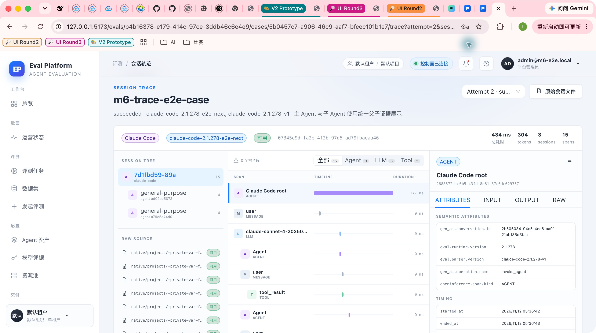
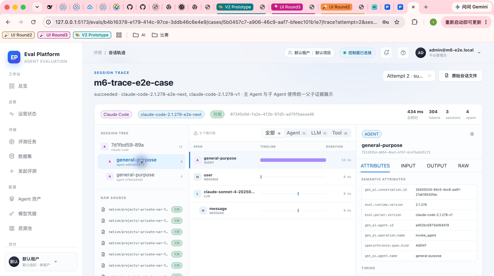
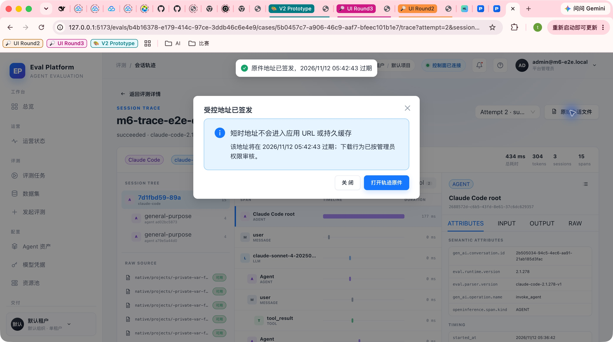
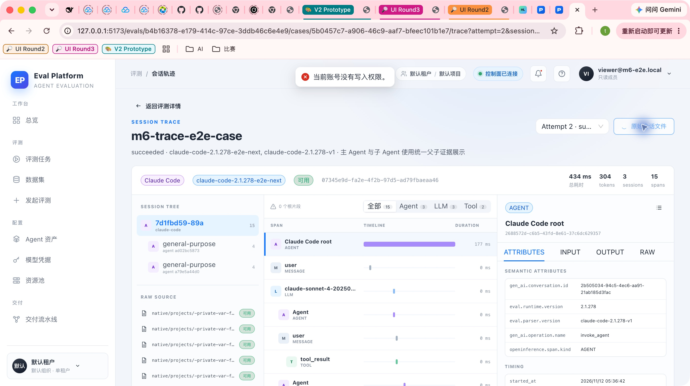
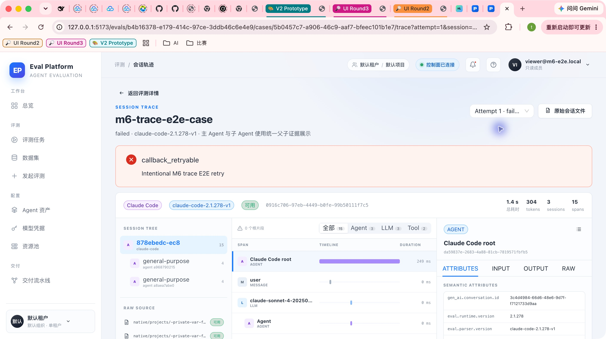
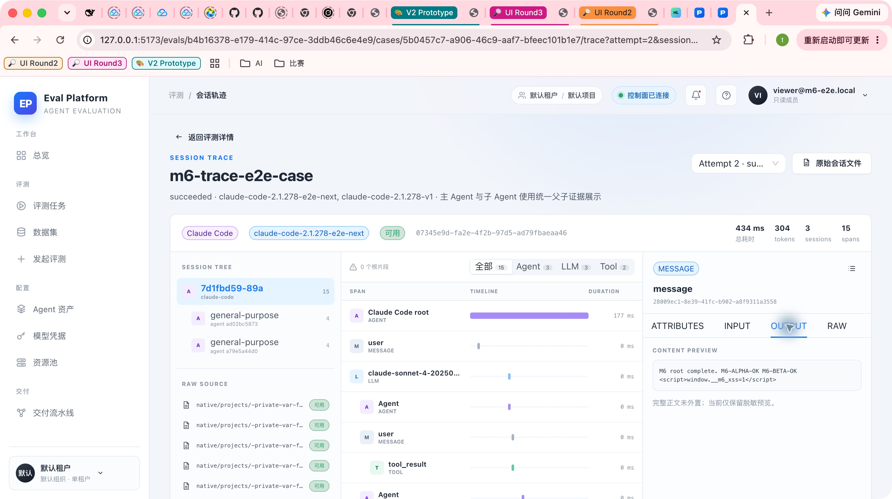

- Runner
- fixed-linux-eval
- Runtime
- Claude Code 2.1.278
- Parser
- claude-code-2.1.278-v1 / e2e-next
- Storage
- 真实 OSS + PostgreSQL
- E2E artifact
- GitHub run 43108971219
- Branch commit
- 2d65298
Computer Use + Fixed Runner Smoke
M6 真实主子 Agent 轨迹端到端验收
固定 Linux Runner 上使用真实 Claude Code 2.1.278、隔离 PostgreSQL 与真实 OSS 完成两次 attempt 的主子 Agent 轨迹闭环，并在本地 Computer Use 中核对三栏查看器、降级、权限、重试隔离和恶意文本安全。评分报告为 synthetic trace fixture，只证明轨迹导入不改变执行与评分终态。
2隔离 attempts
2真实子 Agent
7原生文件
27归一化 spans
2THINKING spans
6GUI 截图
Environment and Artifact
2026-11-12 · PR #171 · run 43104397400Scenario Matrix
8 pass · 1 info| # | 场景 | 结果 | 证据 | 截图 |
|---|---|---|---|---|
| 01 | 固定 Runner 真实 OSS 全链路 | PASS | 真实 Claude CLI 生成原生文件，经 runner 回调、预签名上传、Worker 导入、API 查询成功；评分报告为 synthetic trace payload。 | fixed-runner-evidence.json trace-e2e job 成功 |
| 02 | 主 Agent + 两个子 Agent 恢复 | PASS | 每次 attempt 恢复 1 root + 2 children；父子链路含 tool_use_id、agentId 与 meta 证据。 | 01 02 |
| 03 | 重试 attempt 隔离 | PASS | attempt 1 失败、attempt 2 成功；session 与 trace_file ID 集合完全不相交。 | 05 |
| 04 | 重复回调与 parser 重放 | PASS | upload/failure/completion 均重复投递；重放后 sessions 3→3、spans 23→23，原件 ID 保留。 | fixed-runner-evidence.json |
| 05 | raw 下载与审计 | PASS | 管理员获得 300 秒地址，实际下载 200、no-store，并写入 trace.file.download_url 审计。 | 03 |
| 06 | 只读权限 | PASS | viewer 可读树与 spans、thinking 隐藏；raw 请求 403；匿名 trace 401，未登记 file id 404。 | 04 |
| 07 | 恶意内容安全 | PASS | 轨迹中的 script 文本以纯文本显示，未执行，也没有形成 HTML 控件。 | 06 |
| 08 | 降级矩阵 | PASS | 固定 Runner 额外上传 unknown v99 + stdout-only 清单，平台得到 incomplete、0 sessions、raw 200，执行 succeeded/评分 resolved 不被改变。 | fixed-runner-evidence.json |
| 09 | 评分边界 | INFO | 本 issue 验证 trace E2E，不运行 SWE-bench 评分容器；synthetic score 仅用于证明导入失败/降级不会改写执行或评分终态。 | report-data.json fixed-runner-evidence.json |
Issues and Observations
No defects foundNo defects were found.
Evidence
6 screenshots





Automated Coverage Assessment
7 areas reviewed| 区域 | 覆盖 | 结论 | 建议 |
|---|---|---|---|
| 真实 Claude CLI | E2E | 固定 Runner 上生成 root + 2 children 原生文件。 | 外部模型费用为零，使用确定性测试网关。 |
| OSS 与 PostgreSQL | E2E | 真实 presigned upload/download、事务与 ingestion 通过。 | 保留本次测试对象作为证据。 |
| 重试与幂等 | E2E | 独立 attempts；重复回调；parser replay 不重复。 | 继续在发布前运行手动 trace-e2e。 |
| API 权限 | E2E | 匿名、viewer、admin、非法深链均按边界返回。 | 无。 |
| GUI 与安全 | CUA | 三栏联动、raw 弹窗、拒绝提示、恶意文本纯文本显示。 | 无。 |
| 降级 | E2E | unknown v99 + stdout-only 在 fixed runner 链路中 settled。 | 无。 |
| 真实评分容器 | 边界 | 本 PR 使用 synthetic score，不执行 SWE-bench scoring。 | 真实评分由既有评测流水线与后续评分 E2E 负责。 |
Conclusion
M6 真实轨迹闭环通过固定 Runner、真实 Claude Code、OSS、PostgreSQL、API 与 Web 的真实主/子 Agent 链路已验证，未发现未解决缺陷。
- 常规 PR CI 不运行外部 trace-e2e，避免成本和网络不确定性。
- 测试模型网关是确定性 double，但 Claude Code CLI、原生文件、OSS 与数据库均为真实执行。
- 本次未覆盖真实外部模型供应商或 SWE-bench 评分容器；该边界不影响轨迹采集与归一化验收。
M6-06 · real Claude Code trace E2E · no credentials or private object keys included